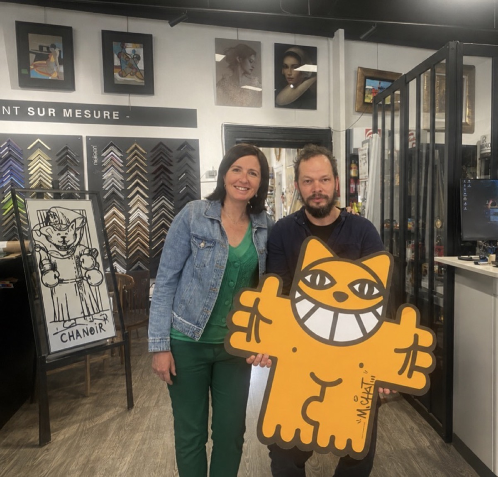

Votre artisan encadreur vous accueille sur rendez-vous, au cœur de Luxembourg-Ville. Réponse sous 48 h ouvrées.

Kathia Neumann
Fondatrice · Encadreur d'art
Plus de 30 ans d'expérience dans l'encadrement d'art. Kathia Neumann perpétue le savoir-faire de la Maison Neumann (Metz, 1972) à Luxembourg, avec la même exigence artisanale.